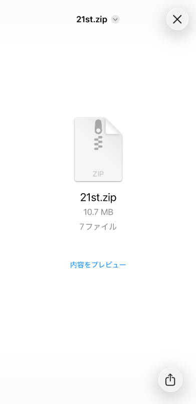
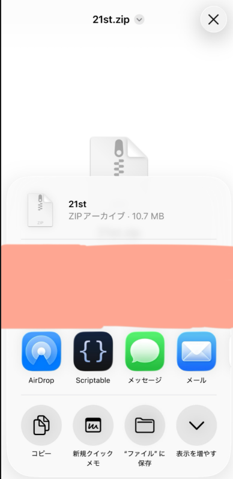
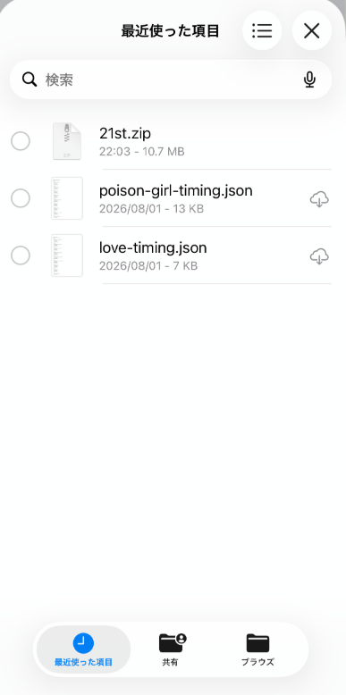
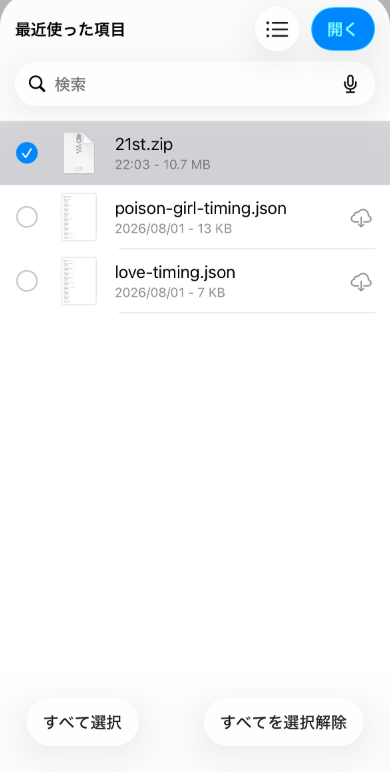
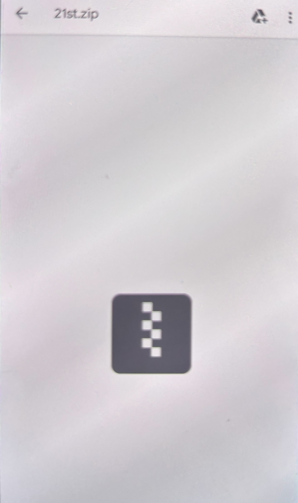
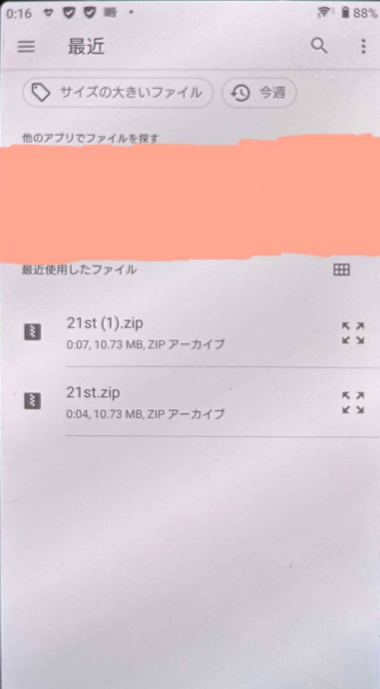

データパックの入れ方
音源・歌詞などの「データパック」を、ほかの人から受け取ってこのアプリへ取り込む手順を説明します。 ZIPファイル1個を選ぶだけで、アプリが自動的に展開・登録まで行います。
- 受け取ったZIPを自分で解凍する必要はありません（アプリが自動でやります）
- 中のmp3やJSONファイルを1個ずつ選ぶ必要もありません
- ZIPファイル1個だけ選べば、あとはアプリが処理してくれます
- ただし、ZIPを受け取っただけでは終わりではありません。一度「端末に保存」してから、アプリで選ぶ、という2段階の操作になります
あなたはどちらですか？
🆕 はじめてこのアプリを使う方
「全曲パック」（full.zip）を受け取ってください。これまでの曲をすべて含んだパックなので、これ1つで全部遊べるようになります。
🔄 すでに使っている方（新しいシングルだけ追加したい）
「追加パック」（自分がまだ入れていないシングルの分。例：21st.zip・22nd.zipなど）を受け取ってください。今まで入れたデータはそのまま残り、新しいシングルの分だけが追加されます。しばらく間が空いていて複数回分が未導入の場合は、それぞれの追加パックを1つずつ順番に読み込んでください（full.zipを入れ直す必要はありません）。
📱 iPhoneでの手順（実際の画面つき）
full.zip（これまでの全曲）
🔄 すでに使っている方 → まだ入れていない回の追加パック（例：21st.zip）
下のSTEPは、そのZIPを受け取ったあとの操作です。どちらのZIPでも操作は同じです。

LINEで送られてきたZIP（full.zip・21st.zip・将来の22nd.zipなど）をタップして開くと、この画面になります。「内容をプレビュー」は押さず、右下の共有ボタンをタップします。

共有画面が開いたら「“ファイル”に保存」をタップし、保存先（あとで見つけやすい「このiPhone内」がおすすめ）を選んで保存します。
データ管理（音源・歌詞の読み込み）
保存できたら＝LOVEクイズに戻り、ホーム画面を一番下までスクロールして「データ管理（音源・歌詞の読み込み）」をタップして開きます。
パックのファイル一式（manifest.jsonを含む複数ファイル）をまとめて選択するか、それらを1つにまとめたZIPファイルを選択してください。
パックのファイル一式（manifest.jsonを含む）、またはそれをまとめたZIPファイルを選んでください
ここでOS標準のファイル選択画面が開きます。

保存した直後は「最近使った項目」に、さっき保存したZIP（例：21st.zip）が表示されていることが多いです。表示されていれば、それをタップします。見つからない場合は、下にある「ブラウズ」から自分がZIPを保存した場所を開いて選んでください。

① 目的のZIPを選ぶとチェックが付きます。② そうしたら右上の「開く」をタップします。
「全曲パック」でセットアップしました
音源84曲・歌詞83曲・コール0曲を登録しました
アプリ側で自動的に展開・登録され（少し時間がかかることがあります）、このような完了メッセージが表示されれば成功です。すぐにクイズ・歌詞・コール等が使えるようになります。
🤖 Androidの場合
Android実機（21st.zip）で実際に確認した手順です。full.zip・21st.zip・将来の22nd.zip・23rd.zipなど、どのZIPでも操作は同じです。
LINEなどで受け取ったZIPファイルを、Android端末にダウンロードしてください（LINE側の画面は機種・アプリのバージョンによって見た目が変わるため、ここでは省略しています）。

データ管理（音源・歌詞の読み込み）
ホーム画面を一番下までスクロールして「データ管理（音源・歌詞の読み込み）」をタップして開きます。
パックのファイル一式（manifest.jsonを含む複数ファイル）をまとめて選択するか、それらを1つにまとめたZIPファイルを選択してください。
パックのファイル一式（manifest.jsonを含む）、またはそれをまとめたZIPファイルを選んでください
ここでAndroid標準のファイル選択画面が開きます。

「最近使用したファイル」に、ダウンロードしたZIP（例：21st.zip）が表示されていることが多いです。それを1回タップするだけで選択が完了します。見つからない場合は、ファイル選択画面から自分がZIPを保存した場所（「ダウンロード」等）を開いて選んでください。
「追加パック」を読み込みました
音源3曲・歌詞3曲・コール0曲を追加しました
アプリ側で自動的に展開・登録され（少し時間がかかることがあります）、このような完了メッセージが表示されれば成功です。すぐにクイズ・歌詞・コール等が使えるようになります。
※ 機種やAndroidのバージョンによって、ファイル選択画面の見た目や操作が多少異なる場合があります。基本の流れ（ZIPをタップして選ぶ→自動で読み込まれる）は共通です。
新規ユーザー向け：具体的な手順（全11ステップ）
- アプリのURLを開く
- 必要であれば「ホーム画面へ追加」しておく（毎回URLを開かなくて済むようになります）
- full.zip（全曲パック）を受け取る
- iPhone/Androidの端末へZIPを保存する
- アプリを開く
- ホーム画面を下までスクロールし「データ管理」を開く
- 「追加データパックを読み込む」をタップする
- 保存したfull.zipを選ぶ
- アプリ側で自動的に展開・登録される（少し時間がかかることがあります）
- 完了メッセージが表示される
- その後すぐにクイズ・歌詞・コール等が使える
既存ユーザー向け：具体的な手順（全7ステップ）
- まだ入れていないシングルの追加パック（例：21st.zip）を受け取る
- 端末へ保存する
- アプリを開く
- 「データ管理」を開く
- 「追加データパックを読み込む」をタップする
- 受け取った追加パックを選ぶ
- そのシングルの分だけが追加され、これまでのデータはそのまま残る（未導入のシングルが複数ある場合は、1〜6を繰り返す）
このページは docs/data-pack-guide.md にも同じ内容を残しています（外部共有・GitHub上での閲覧用）。